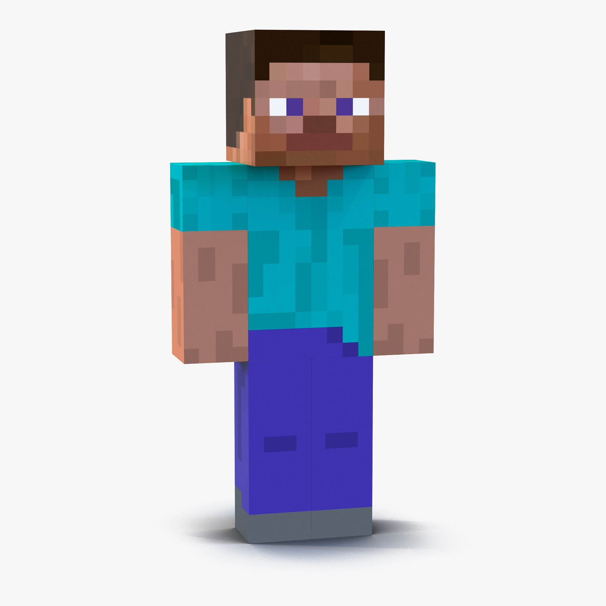
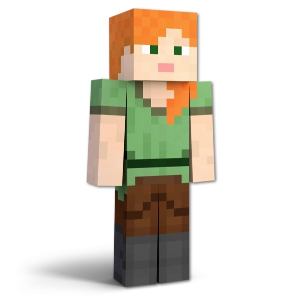

The protagonist of Minecraft is the player character, who is often referred to as "Steve" or "Alex". The player can customize their character's appearance and name, but they are generally depicted as a blocky humanoid figure with a simple design. The player character is the main focus of the game, and players can control them to explore the world, gather resources, build structures, and fight off enemies.

\